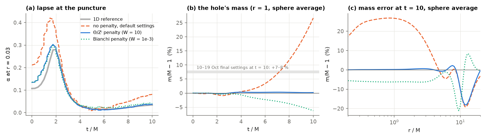
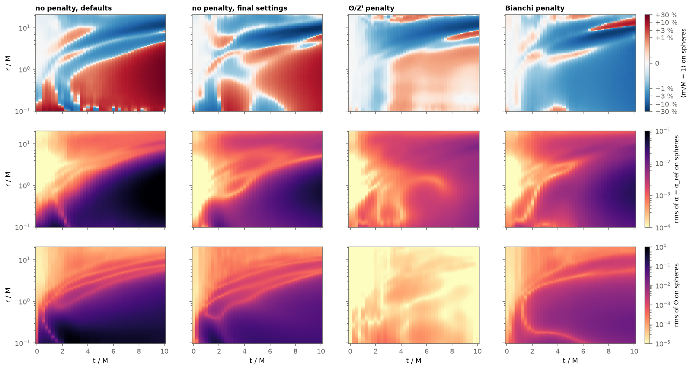
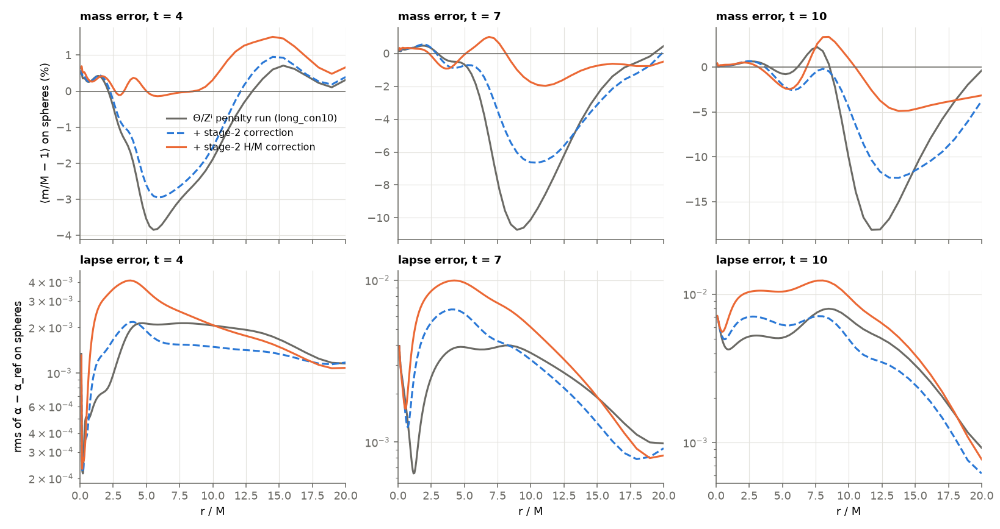
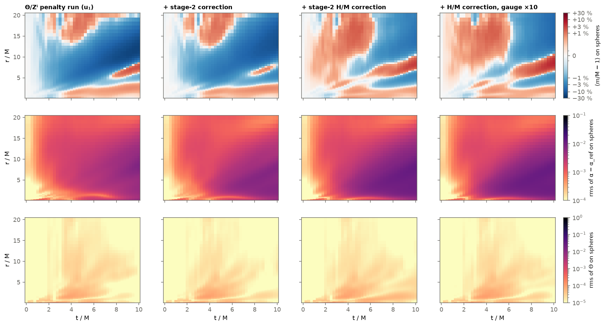

single_a, long_ctl (the control run), long_con10 and long_bia3; their settings are in the table of section 1.Two configurations are compared. The defaults are the code's default flags, the 10–19 Oct summary's “first
baseline”, used by the run without a penalty (single_a). The final settings are that summary's best
configuration, used by both penalised runs and by the control run (long_ctl). The changes are more points around the
hole, twice the QN iterations and, for the penalised runs, the penalty:
| per window (0.25 M) | defaults | final settings | distribution |
|---|---|---|---|
| interior, core cloud | – | 48 000 | Gaussian, σ = 0.5, about the tracked puncture |
| interior, focus cloud | 48 000 | 48 000 | Gaussian, σ = 2, about the tracked puncture |
| interior, bulk | 32 000 | 32 000 | uniform in the ball r ≤ 24 |
| initial and end surfaces, each | 8000 | 12 800 | focus + bulk (60/40), plus 4800 core points |
| outer boundary (Sommerfeld) | 16 000 | 16 000 | on the sphere r = 24 |
| QN iterations | 12 000 | 24 000 | SSBroyden; all points redrawn every 250 |
| redraws of the points | 48 | 96 | |
| constraint penalty | none | Θ/Zⁱ, W = 10 or Bianchi, W = 1e-3 | from t = 0 (8 windows to t = 2, then continued to t = 10); none in the control run |
Everything else is the same: one 6×40 tanh network per window, m = 0.5, shift-driven puncture tracking, no point within 0.02 of the puncture, interior times from a truncated exponential at the window start widened to uniform by 70 % of the redraws. The defaults run used the QN code before its 19 Oct update (scale invariance, now on by default). The Θ/Zⁱ penalty uses all 128 000 interior points; the Bianchi term uses the 4096 last ones (core cloud). With the final settings, 29 % of the interior points lie at r < 1, 43 % at 1–5, 10 % at 5–15 (24 % of the volume, where the outgoing mass deficit of section 5 travels) and 19 % at 15–24.
With the final settings the code reproduces the 10–19 Oct numbers against the reference: α error at the puncture 0.022 / 0.032 at t = 0.25 / 1 (theirs 0.019 / 0.024), 5× better than the defaults (0.108 / 0.153). On fresh points never trained on, the loss is 5–10× higher than the value logged in training, and the logged loss falls (1e-6 → 2e-7) over a stretch where the mass error of the same run grows to +28 %. Every result below is therefore judged by the reference and by the mass, which in vacuum spherical symmetry must equal M at every radius and in any slicing (checked exact to 4e-15 on the initial data).
Each window's network is evaluated at its start and end, so the error at any radius splits exactly into the
initial-data fit, the growth inside windows, and the jumps at the hand-offs between windows. In
single_a at t = 10 (r = 1): initial −1e-4, inside windows +0.30, hand-offs −0.015. So the error is
built inside the windows, not inherited at the hand-offs, and its radial density is positive only at r ≲ 0.3, around the
horizon; the integral carries it outward.
The cause is direct. We rebuilt the 4D metric and the Z4 vector Zμ from the network's CCZ4 fields (Alic et al. mapping; exact Schwarzschild passes it to 7e-15) and evaluated the Z4 field equations Eμν = Rμν + ∇μZν + ∇νZμ. In window 1, the rms of E is 0.2 at r ∈ [0.3, 0.7), 7e-3 at [0.7, 1.5) and 4e-4 at [3, 6): the network's spacetime is not Ricci-flat at the ~5 % level around the horizon, while the CCZ4 residual there is 2.4e-4. The residual loss sees the evolution equations, and these admit solutions with Θ, Zⁱ ≠ 0, which carry wrong mass. Only the initial data rule them out.
Two ways to rule them out, each a term added to the loss, zero on the true solution:
--w_constraint W): W·mean(Θ² + |Zⁱ|²) over the interior points. Cheap.--w_bianchi W): for any metric and covector,
∇μ(Eμν − ½gμνE) = □Zν + RνμZμ. Z obeys a linear wave equation
sourced only by the divergence of the field-equation residual, which is the part of the error that feeds the constraint
modes. The term W·mean(B²), B = □Z + R·Z, on 4096 core points, checked to 5e-16 on random metrics. It needs third
derivatives of the network and costs ~35× the residual per point.At t = 2 (8 windows), both cut the core errors ~10× against the same run without them: core α error 1.2e-2 → 7e-4 (direct) / 1.1e-3 (Bianchi), max Θ 0.45 → 3e-4 / 1.4e-2. Continued to t = 10:
| t = 10 | no penalty, defaults | no penalty, final (control) | direct, W = 10 | Bianchi, W = 1e-3 | 10–19 Oct final |
|---|---|---|---|---|---|
| α at r = 0.03 (reference 0.034) | 0.081 | 0.013 | 0.037 | 0.041 | 0.041 |
| α error, core 0.05 ≤ r < 0.5 / mid 0.5 ≤ r < 5 | 6.6e-2 / 1.0e-1 | 3.8e-2 / 3.9e-2 | 6.0e-3 / 3.5e-3 | 2.2e-2 / 2.7e-2 | – |
| max |Θ| | 0.42 | 0.13 | 3e-5 | 2.9e-2 | – |
| mass of the hole, m/M − 1 at r = 1 | +27 % | +9.7 % | +0.19 % | −6.2 % | +7–8 % |
| worst outer deficit (radius) | −19 % (12.4) | −36 % (10.0) | −18 % (11.7) | −21 % (9.5) | ≤ 17 % (4–12) |
| puncture drift |xp| | 0.13 | 0.014 | 0.010 | 0.007 | 0.023 |
The direct term is the clear choice for the hole: Θ falls 10⁴×, and the lapse and the mass at the puncture match the reference. The control run shows this is the penalty, not the settings: with the final settings alone the lapse at the puncture falls to 0.013 (reference 0.034; it touches zero at t ≈ 9.75), the core lapse error is 6× the penalised run's, and the hole is 9.7 % too heavy, the 10–19 Oct summary's +7–8 %. The Bianchi term, the more physical idea, does less at the weight tried and makes the hole too light (−6 %).

The maps separate two errors. Inside the outgoing front the hole's mass is what the penalties fix: steadily too heavy without them (+27 %), right with the direct term, uniformly too light with the Bianchi term. The second error is common to all four runs: a deficit band leaves the hole at t ≈ 2 and moves out along the path of the gauge pulse, reaching −18 to −21 % at r ≈ 10–12 by t = 10, and −36 % at r ≈ 10 with the final settings and no penalty. This matches the 10–19 Oct observation (“up to 17 % at r ≈ 4–12 where the gauge pulses pass”). The lapse error and Θ follow the same outgoing paths. Along a single axis the deficit can be twice its sphere average (−36 % on the ±x rays of the direct-penalty run), so it is not spherical. Where the pulse travels (r ≈ 5–15) every run rests on the sparse uniform sample, since the core and focus clouds sit at the hole, so that region is the first candidate. The control run settles it: the final settings alone do not reduce the deficit; without the penalty it grows twice as fast after t ≈ 5 and reaches −36 %, while Θ grows 20× between t = 4 and 10. The settings and the penalty act on different errors, and neither removes this one.
A single puncture should stay at the origin; in the defaults run it reaches 0.13 by t = 10. With puncture tracking off the push at the origin is 10× smaller. Holding the clouds at the origin only halves it, while drawing every cloud in point-reflected pairs about its centre stops it:
| t = 4, defaults | drift | |β| at origin, t = 3 | non-spherical part |
|---|---|---|---|
| clouds follow the tracked puncture | 0.020 | 3.5e-2 | 0.6 |
| clouds held at the origin | 0.010 | 1.8e-2 | 0.32 |
point-symmetric clouds (--symmetric_focus) | 0.0008 | 8.3e-4 | 0.17 |
The seed is the random lopsidedness within each cloud, which tracking amplifies. The constraint penalties control the drift almost as well, without symmetric clouds:
| puncture drift |xp| | t = 2 | t = 3 | t = 5 | t = 7.5 | t = 10 |
|---|---|---|---|---|---|
| no penalty, defaults | 1.4e-3 | 1.0e-2 | 2.7e-2 | 6.0e-2 | 0.13 |
| no penalty, final settings (10–19 Oct) | – | – | – | – | 0.023 |
| no penalty, final settings (control) | 6.0e-4 | 2.4e-3 | 5.1e-3 | 8.3e-3 | 1.4e-2 |
| Θ/Zⁱ penalty | 3.5e-4 | 7.7e-4 | 9.4e-4 | 5.7e-3 | 1.0e-2 |
| Bianchi penalty | 3.9e-4 | 6.1e-4 | 1.2e-3 | 1.7e-3 | 6.8e-3 |
To t = 5 both stay near 1e-3, the level of the symmetric clouds at t = 4, and at t = 10 they are 13–19× below the defaults and
1.4–2× below the final settings alone (control run; 0.023 in the 10–19 Oct summary). Why, measured on spheres of radius 0.3 about the tracked puncture (tools/drift_dipole.py): the tracker
moves the puncture with −β(xp), and the Gamma-driver feeds β from the dipole (sphere average) of Γ̂ⁱ, which CCZ4 splits
exactly as Γ̂ⁱ = Γ̃ⁱ[γ̃] + 2Zⁱ/χ. Without a penalty the conformal metric grows a large dipole, |⟨Γ̃⟩| ≈ 0.13 at t = 10, that Γ̂ⁱ
mostly does not follow: 2Zⁱ/χ ≈ −Γ̃ⁱ, a constraint violation the evolution equations allow. The ~10 % that does reach Γ̂ⁱ
(|⟨Γ̂⟩| ≈ 1.4e-2) drives β (3.9e-2) and the drift. With the penalties the metric's dipole is 20–40× smaller (3.5e-3 Θ/Zⁱ,
6e-3 Bianchi), and Γ̂ⁱ and β 5–10× smaller. The asymmetry enters the metric through the constraint-violating mode, and the
penalties close it. The final settings alone also drift little (0.014), but their hole and outgoing deficit are worse. Symmetric clouds leave the mass error
unchanged; drift and mass are separate problems. The penalised runs drift 10× less without symmetric clouds.
The deficit is a violation of the true ADM constraints, H = R + K² − KijKij and Mi = DjKji − ∂iK. Θ and Zⁱ can vanish while these do not. On spheres, dm/dR = R²⟨H⟩/4; in the Θ/Zⁱ run ⟨H⟩ integrates to −15 % of the −18 % at r = 11, t = 10, and it is below 1e-3 at t = 0. So it is built during the evolution, inside the windows (−21.5 % at r = 10) rather than at the hand-offs (−0.8 %). To correct the propagation across windows, we froze the finished Θ/Zⁱ run u₁ and trained a single correction network N over all of 0 ≤ t ≤ 10, so that u = u₁ + s·N with s = ε (t/T)(1 − r²/R²)(1 − e−r²/rc²). The factor keeps the initial data, the outer boundary and the puncture exactly as in u₁. It is trained on the residual of the sum: N is 4 × 64, with 3 200 points per window span spread evenly in the ball (128 000 per draw, redrawn every 250 steps), 24 000 SSBroyden steps, and ε = 0.01. The run took 1.7–2 h on one A30. Two versions were trained: the same loss as u₁ (“stage-2 correction”), and the same loss plus mean(χ²(H² + |M|²)) (“stage-2 H/M correction”). Both are graded as u₁ + correction against the reference.
| worst outer deficit (sphere average) | t = 4 | t = 6 | t = 8 | t = 10 | α error, r = 3–6, t = 10 |
|---|---|---|---|---|---|
| Θ/Zⁱ penalty run (u₁) | −3.8 % | −8.1 % | −14 % | −18 % | 5.2e-3 |
| + stage-2 correction | −3.0 % | −4.8 % | −8.8 % | −12 % | 6.6e-3 |
| + stage-2 H/M correction | −0.1 % | −0.8 % | −2.9 % | −4.9 % | 1.1e-2 |
| + stage-2 H/M correction, gauge rows ×10 | −0.4 % | −0.5 % | −2.9 % | −6.7 % | 1.0e-2 |


The H/M term removes most of the outgoing deficit, and the hole stays at +0.2–0.3 % in every version. What it costs is the lapse: about 2× the run's error at r = 3–6. Weighting the gauge equations 10× does not recover it, so this is not a weighting problem. The mass is gauge-invariant, but the lapse is not, and the correction reaches the constraints partly through a different slicing from the reference's. Θ stays small (1–2e-5).